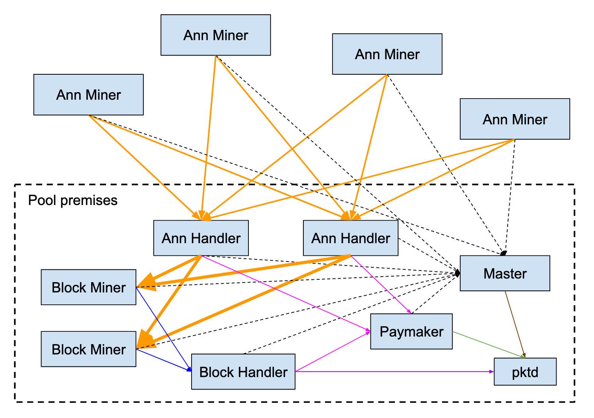
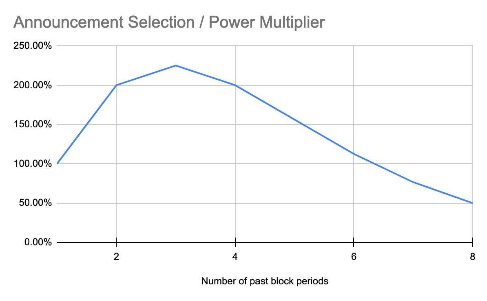
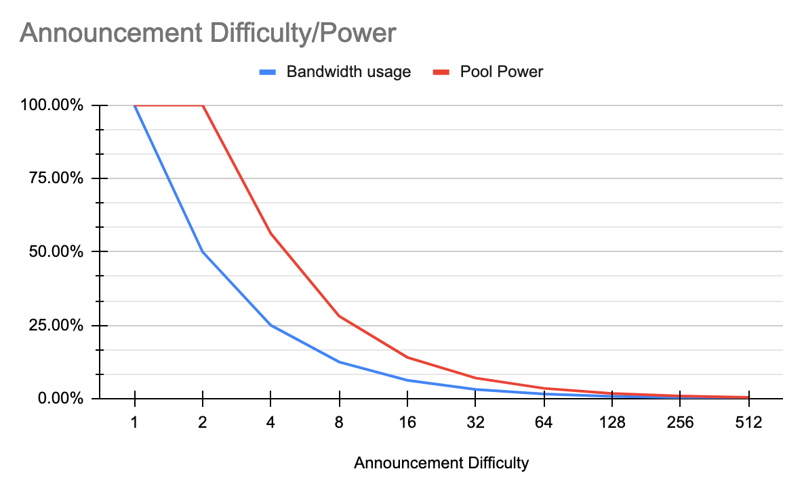

Mining¶
PacketCrypt is a bandwidth hard proof of work, this means it requires lots of bandwidth to mine. Miners collaborate with one another by sending small messages (called Announcements) and the sending of these messages requires a large amount of bandwidth.
Miners who are working in collaboration with one another are members of a mining pool, therefore all mining of PacketCrypt is done in pools.
PacketCrypt mining is split into two distinct stages:
- Announcement Mining - Using your CPU to create Announcements
- Block Mining - Collecting Announcements from Announcement Miners and using them to mine blocks
Block mining is typically done at the mining pool's datacenter, however Announcement mining can be done from anywhere.
How to Announcement mine¶
Installing from source¶
Pre-built packetcrypt binaries (for linux) or installation packages (for macos) and archives (for windows) can be downloaded from packetcrypt releases page.
- For windows, download the zip archive suffixed with
-windows.zip
and extract its content. - For macos, download the package suffixed with
.pkg
and click on its icon in the Finder for installation. - For linux, download the binary suffixed with
-linux_amd64and rename itpacketcrypt. -
- If you're on Arch linux or Manjaro, you can install the packetcrypt AUR package
Deploying a Docker Image¶
There is a PacketCrypt Docker image available, which can be used for announcement mining.
To install:
-
Download and install Docker for your operating system.
-
Download the PacketCrypt Docker image:
$ docker pull thomasjp0x42/packetcrypt
There's also available a PacketCrypt Docker image built without the portable flag (--no-portable) which may increase the performance of the announcement mining while reducing CPU compatibility. Image is available at thomasjp0x42/packetcrypt-amd64.
- Run the container similar to the commands described in the Begin Announcement Mining section, except replace this part of the command:
$ packetcrypt
with this command to run PacketCrypt from Docker:
$ docker run thomasjp0x42/packetcrypt
The final command will be formatted like this:
$ docker run thomasjp0x42/packetcrypt ann -p <your_wallet_address> <pool_1>
More information can be found at the PacketCrypt DockerHub page
Begin Announcement Mining¶
Important
You cannot mine into the electrum wallet, You can only mine into the Command Line Wallet, the Pkt.World Wallet or the Mac GUI Wallet .
To begin mining, you will need the address of your wallet and you will need to choose a pool.
There are two ways to configure the announcement miner; by using CLI parameters or by using a configuration file:
Using the CLI
packetcrypt ann -p <your_wallet_address> pool_1 [pool_2 pool_3 pool_4]
[or for windows]
packetcrypt.exe ann -p <your_wallet_address> pool_1 [pool_2 pool_3 pool_4]
Using a Configuration File
A configuration file must be in JSON format. The file can be loaded from the local filesystem or from a web-accessible location.
Any CLI parameters used will overide the corresponding settings in the configuration file.
Example config.json:
{
"payment_addr": "<your_wallet_address>",
"pools": [
"pool_1",
"pool_2",
"pool_3",
"pool_4"
]
}
packetcrypt ann -c "./config.json"
[or]
packetcrypt ann -c "https://example.com/config.json"
[or for windows]
packetcrypt.exe ann -c "./config.json"
[or]
packetcrypt.exe ann -c "https://example.com/config.json"
Announcement mining can be done into a single pool or multiple pools. When you announcement mine into multiple pools, you will be paid by each pool that you submit announcements to.
pool_1 is the pool running the highest difficulty. If you notice problems, you can test listing the pools in a different order. The number of pools you mine into is at your discretion. If a pool is down or malfunctioning you will notice the pool is not mining at [100%] in your mining feed and you can choose to remove the under-performing or malfunctioning pool.
Choosing Pools to mine in¶
You can mine in as many pools as you have the bandwidth to supply. The same data will be uploaded so your CPU is only used once. Currently the pools which are regularly winning blocks include:
- Pkteer:
http://pool.pkteer.com - PKTPool:
http://pool.pktpool.io - PktWorld:
http://pool.pkt.world
If you have bandwidth to spare, you may wish to consider mining with some or all of the new/experimental mining pools listed below. New pools require support from the mining community (in the form of announcements) in order to test their infrastructure and begin to win blocks.
- K1m3r4:
http://pool.k1m3r4.com/ - Oeuf2:
http://oeuf2pool.xyz - Pktco.in:
http://pktco.in - Pkt Digger:
http://p.master.pktdigger.com/ - Pkthash:
https://pool.pkthash.com
(Check the relevant channels on Discord for current pool statuses)
You should test your daily earnings on each pool to see which one is best. Your mining revenue depends on how much each pool allocates towards announcement miners as well as how much hardware they are using in-house. The pools are winning different blocks and if you mine to just one pool, your not getting any payment from the others when they win a block. It's the same with mining to a pool that is not winning any blocks.
Limiting System Resources¶
Limiting the system resources available to Packetcrypt may negatively effect your mining power but can be useful to conserve resources for other processess.
Limit CPU Usage¶
Announcement mining is a resource intensive process. By default, Packetcrypt will use 100% of the available CPU resources. CPU usage can be limited by assigning a limited number of threads to packetcrypt using the -t CLI parameter or "threads" key if using a configuration file.
Example of assigning four (4) threads to Packetcrypt:
packetcrypt ann -p <your_wallet_address> pool_1 [pool_2 pool_3 pool_4] -t 4
or
{
"threads" 4
}
Limit Bandwidth Usage¶
Bandwidth usage is directly related to two main factors:
1 - Mining difficulty of the primary pool (the first pool listed in Packetcrypt pool configuration)
- A lower difficulty means higher bandwidth usage
2 - The number of pools mined
- Packetcrypt will send the same Announcements to each pool mined
Bandwidth usage can therefore be limited by selecting a higher difficulty pool as the primary pool and/or by mining to fewer pools.
Block Mining & Running a Pool¶
Because each block miner must use as much bandwidth as all of the announcement miners combined, block mining is typically done at the location of the pool. Even a pool operator who wanted to support external block mining would find that the pool itself would need enough upload bandwidth to match all of the block miners - which would be completely untenable. If you are interested in block mining, contact the pool operator and discuss sending hardware to their location.
Starting your own pool requires setting up a number of services:
- pktd node (one or more) - One pktd instance is required for the Master to function, each of the Block Handlers may optionally use separate pktd nodes.
- Master (one) - This node coordinates all of the others and provides work files and configuration
- Ann Handler (one or more) - These are high performance nodes which accept announcements from the announcement miners in the network, they also provide announcements to the block miners. As you scale up the amount of bandwidth in the pool, you will need to add more Ann handlers.
- Block Miner (one or more) - These nodes download announcements from the announcement handlers and use them in the mining process to mine blocks.
- Block Handlers (one or more) - These nodes receive "block shares" from the block miners and submit blocks if
- Paymaker (1) - This node receives updates from the Ann Handlers and Block Handlers and keeps track of who should be paid. The Paymaker sends configuration to the pktd node which is used by the Master in order to make the pool pay out the announcement and block miners
PacketCrypt Data Flow¶

- █ Orange: Announcements are sent from the Announcement miners to the Ann Handlers and then to the Block miners
- █ Blue: Block shares are sent from block miners to Block Handler(s)
- █ Purple: Winning blocks are submitted by the Block Handler(s) to pktd and the PKT network
- █ Pink: Block Handlers and Ann Handlers inform Paymaker of work done by announcement and block miners
- █ Green: Paymaker configures pktd instance to create blocks which pay the people who have been mining
- █ Brown: Master gets block templates from pktd instance
- Black dotted line: All nodes request configuration and block templates from Master node
More Information and PacketCrypt Pool Code¶
The code and documentation for running a pool is available on the C / nodejs version of the PacketCrypt project, the new Rust version only contains Announcement Miner and Announcement Handlers.
Announcement Difficulty¶
PacketCrypt is designed in such a way that a mining pool can double its effective power by:
- Doubling the total block mining computation effort
- Doubling the total announcement mining computation effort, or
- Doubling the amount of bandwidth between announcement miners and the pool
The way that a pool operator limits the amount of bandwidth flowing into the pool, to prevent overloading of the network, is by setting what is known as the announcement difficulty. The announcement difficulty for a pool specifies how much work must be done on an announcement in order for the announcement to be accepted and paid out by the pool. Announcement difficulty serves to slow down the announcement miners to protect the pool's network.
In general, doubling the announcement difficulty will halve the amount of bandwidth used by the
pool and will also halve the pool's overall mining power, with a limit that setting the announcement
difficulty lower than 2 does not bring any additional value. To explain why it works like this,
we need to examine the PacketCrypt algorithm rules and the in particular how the block mining software
decides which announcements to use when attempting to mine a block.
Announcement Set Selection¶
PacketCrypt algorithm allows block miners to perform less work if they are able to prove that they had a certain number of "high value" announcements in memory at the time of mining, the exact ratio of actual work a block miner must do to the amount of work the PKT blockchain requires is called the power multipler.
For a block miner seeking to optimize their power multiplier, every announcement has a particular level of utility value which is based on the amount of work that was done by the announcement miner (announcement difficulty) and how old the announcement is. We call this the effective difficulty.
The effective difficulty of an announcement starts off as the actual difficulty of the work done to mine it and then decreases by half every block-period until it is less than 1 and the announcement is no longer usable for mining.
The block mining software selects a subset of announcements which which will give it the best power multiplier based on the PacketCrypt algorithm:
power_multiplier = min(effective_difficulty) * ann_count ** 2
The min(effective_difficulty) is the effective difficulty of the "least valuable" announcement
that is being mined with.
Lets assume that announcement miners are providing a steady supply of 1000 announcements per block-period and all announcements have an initial announcement difficulty of 128. The block mining software can choose to mine with 1000 announcements at 128 effective difficulty, or with 2000 announcements at 64 effective difficulty, or with 3000 announcements at 32 effective difficulty and so on.

The best choice is to use the previous three block periods which provides a power multiplier that is 225% higher than that of using just the most recent 1 period worth of announcements. This curve is the same no matter what difficulty we are starting with.
Optimal Difficulty Curve¶
Knowing that the optimal announcement set is all of those announcements mined over the past 3 block periods, we can compute the overall power of a pool as the announcement difficulty is raised.
At announcement difficulty 1, announcements cannot be used for more than 1 block, but if we imagine
that the announcement mining community can produce 1000 announcements per block at difficulty 1 then
we can reason that the power multiplier will be 1000 ** 2 or 1 million.
At difficulty 2 we can expect the announcement miners will produce 500 announcements per block period but since 2 block periods can be used, the power multiplier is the same.
At difficulty 4, the announcement miners will produce 250 announcements per block period and they
will be valid for 3 block periods making the power multiplier 750 ** 2 or 562,500.

From here, the power output of the power multiplier of the optimal announcement set halves for each
doubling of the announcement difficulty, making the optimal difficulty 2.
FAQ for ANN Miners¶
What does overflow mean?¶
When the ann handler receives an announcement, it puts it into a queue, when the queue fills up it responds overflow immediately. The queue can become long, so you may receive "operation timed out" you're still being paid, when you receive "overflow" you are not being paid.
Unfortunately, you may also receive "operation timed out" because the handler is unresponsive, it's not obvious which is the reason from looking at the logs.
For example, what you will see in the AnnMiner Logs:
1618394538 INFO annmine.rs:519 467 Ke/s 28.56Mb/s overflow: [0, 0, 3072, 0] uploading: [0, 0, 17632, 0] accept/reject: [26932/0, 0/0, 4856/0, 796/0] - goodrate: [100%, 100%, 61%, 100%]
- 467 Ke/s 467 kilo-encryptions (thousands of encryptions) per second of mining power.
- 28.56Mb/s Total upload bandwidth (to all pools - combined)
- overflow: [0, 0, 3072, 0] Overflowed the internal queue of the ann miner, before it was even able to upload to the pool, one number for each pool you're mining to.
- 3072 Number of anns which are not uploaded to pool #3.
- uploading [0, 0, 17632, 0] Number of anns currently in-flight in active http requests, again 3rd pool is a problem, others are doing well (in this example).
- accept/reject [26932/0, 0/0, 4856/0, 796/0] Anns accepted/rejected by each pool, these numbers are based on the previous 10 seconds, pool #2 is giving a zero accepted which might be an issue, keep watching the next message 10 seconds later for another update.
- goodrate [100%, 100%, 61%, 100%] Goodrate = number of anns accepted divided by number of anns produced.